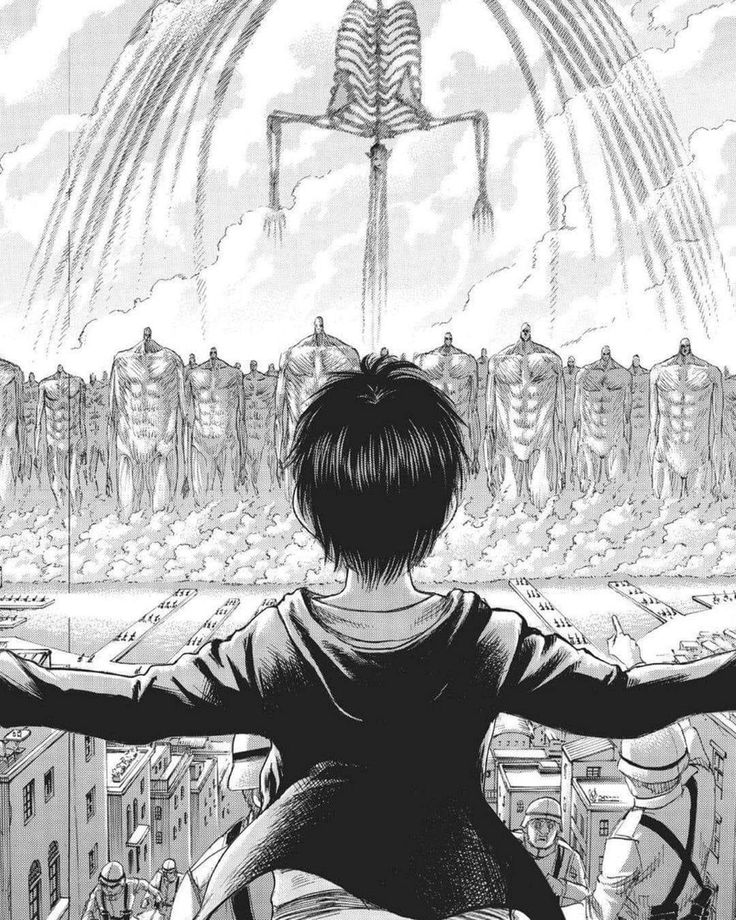
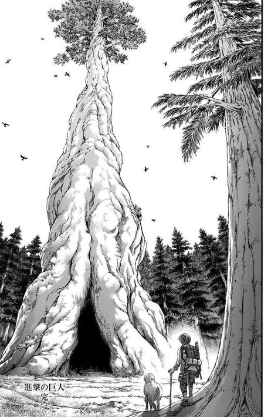
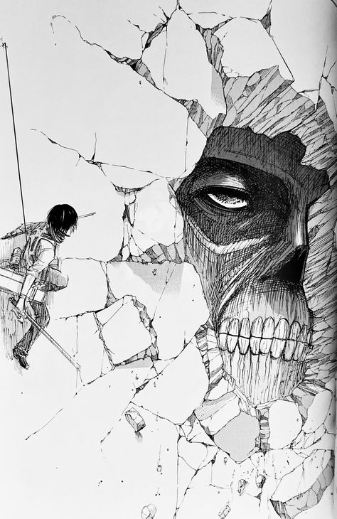

L'Attaque des Titans (Shingeki no Kyojin en japonais) est une série de manga créée par Hajime Isayama, publiée pour la première fois en septembre 2009 dans le magazine Bessatsu Shōnen Magazine de la maison d'édition Kodansha. Ce manga a rapidement connu un succès mondial et a été adapté en anime, en films live-action, en jeux vidéo et en plusieurs autres supports, devenant ainsi un phénomène culturel majeur. L'œuvre s'est achevée en 2021 après 139 chapitres, et elle a influencé de nombreux aspects de la pop culture contemporaine.
  Ce site contient du spoil!!